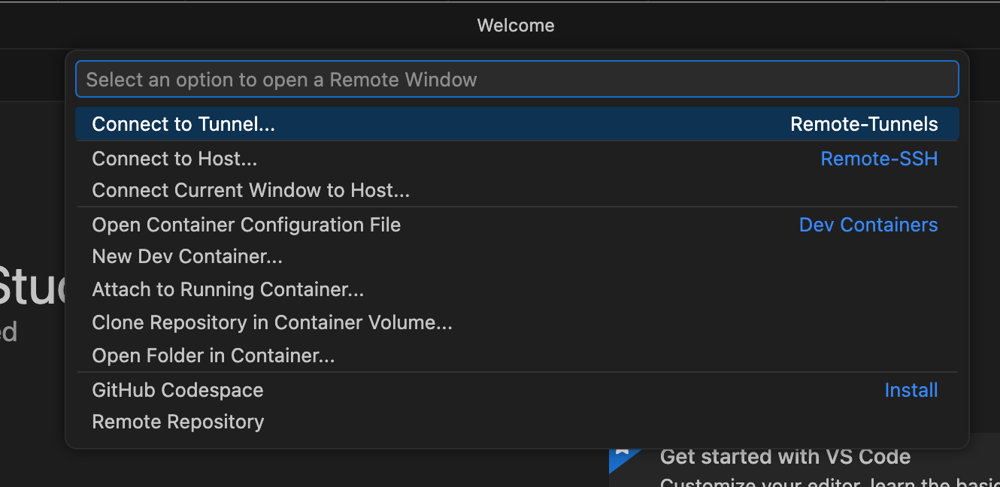

Visual Studio Code#
Visual Studio Code is a popular code editor with extensions for coding in different languages. We recommend using Visual Studio Code through the HPC OnDemand Web Portal. See instructions for the using the portal version (preferred) below. You can also use Remote Tunnels submitted via batch jobs.
Important
We understand that research and code development often requires interactive use. However, interactive use is inherently inefficient and often results in substantial HPC resources sitting idle. We highly recommend submitting scripted and batched jobs whenever possible. If you would like assistance converting an interactive workflow, please contact us..
Portal#
Using the HPC OnDemand Web Portal portal is the preferred and easiest way to use Visual Studio Code on M3.
Select “Visual Studio Code” from the “Interactive Apps” drop-down menu.
Select options required for your Visual Studio Code instance. These options are the same as those requested via a standard Slurm script. Any modules that are needed at runtime should be loaded using the “Custom environment settings” (i.e.
module load miniforge).
Note
Some modules will not work as anticipated in Visual Studio Code because it is running in a container. If you need a module that will not load in this environment, you can still use Visual Studio Code as your code editor, but run modules and code with the Slurm scheduler from an SSH session.
Select “Launch”
Wait for the job to start. When the job starts a new button “Connect to Visual Studio Code” button will appear.
Select “Connect to Visual Studio Code”
The Visual Studio Code graphical interface will be presented and running on the resources requested.
When finished using the Visual Studio Code instance, return to the “My Interactive Sessions” tab in your browser and select “Delete” and “Confirm”, when prompted, to cancel the job.
Tunnel#
Visual Studio Code can also be used on M3 or the SuperPOD by starting a SSH tunnel in a job. The following is the recommended way of starting a session.
Setup on your computer#
In order to use the remote tunnel, you will need the following:
A recent version of VSCode.
Install the following extension (these extensions are all published by Microsoft)
HPC Job Script#
On either M3 or the SuperPOD, copy the following job script and make any necessary modifications. You will need to change the Slurm account to an active allocation in ColdFront that you have access to – the one in this script is an example and will not run. You may need to adjust the requested resources to match your needs, for instance, if you need more cores or memory.
We’ll call this file vscode_tunnel.sbatch, but you can name it something else if you like.
#!/bin/bash -e
#SBATCH -J code_tunnel # job name (optional)
#SBATCH -p dev # partition
#SBATCH --time=0-01:00:00 # time in Days-HH:MM:SS
#SBATCH -c 1 # number of cores
#SBATCH --mem=4G # memory in GB
#SBATCH -A peruna_0001 # slurm account to use (MUST CHANGE!)
#SBATCH --signal=B:USR1@15 # send interrupt signal 15s before end
# Set a name for the tunnel. We recommend using something
# that identifies the system, lik m3tunnel on M3 and
# superpodtunnel on the SuperPOD
TUNNEL_NAME="m3tunnel"
#########################################################
# You shouldn't need to change anything below here. #
#########################################################
# Function executed when signal USR1 is sent
# before the job ends to clean up running processes
function sig_handler()
{
echo "function sig_handler called"
echo "Signal trapped - `date`"
# stop any running commands
# Check if the AUTH PID exists
if [[ -v AUTH_PID ]]; then
# Check if the auth process is running
if ps -p "$AUTH_PID" >/dev/null; then
# kill it, the -15 tries to kill "nicely"
kill -15 $AUTH_PID
fi
fi
# check if the TUNNEL PID exists
if [[ -v TUNNEL_PID ]]; then
# Check if the auth process is running
if ps -p "$TUNNEL_PID" >/dev/null; then
# kill it, the -15 tries to kill "nicely"
kill -15 $TUNNEL_PID
fi
fi
# delete the temporary folder if it exists
if [[ -v JOBTEMP ]]; then
if [ -d "$JOBTEMPR" ]; then
rm -rf $JOBTEMP
fi
fi
exit 0
}
# "trap" or wait for the signal USR1 and call the sig_handler
# helper function to clean up temporary files and running
# processes
trap 'sig_handler' SIGUSR1
# create a temp directory in $SCRATCH to download VSCode
# cli tools and run out of
# Reminder $SCRATCH has a 60 purge policy -- files
# older than 60 days may be permanently deleted without warning
# This will only be used for temporary files and this script
# will try to delete them before the job ends
JOBTEMP=$(TMPDIR=$SCRATCH mktemp -d)
# Download the latest stable version of VSCode CLI tools
# and extract it to the JOBTEMP folder
echo "Downloading VSCode CLI to: ${JOBTEMP}"
curl -Lk 'https://code.visualstudio.com/sha/download?build=stable&os=cli-alpine-x64' | tar -C $JOBTEMP -xzf -
# Generate a login code for the tunnel using Microsoft as the authenticator
echo "Generating authentication code"
VSCODE_CLI_DISABLE_KEYCHAIN_ENCRYPT=1 $JOBTEMP/code tunnel user login --provider microsoft &
# get PID of login code process
AUTH_PID=$!
# wait for authentication to succeed
wait ${AUTH_PID}
# Start the tunnel
# By running this, you are accepting VSCode's license. We highly recommend
# reviewing the license first: https://code.visualstudio.com/license
echo "Starting code tunnel"
$JOBTEMP/code tunnel --accept-server-license-terms --name ${TUNNEL_NAME} &
# Get PID of code tunnel
TUNNEL_PID=$!
# Keep running until we get the interrupt signal or the code server
# session ends
echo "Running"
wait ${TUNNEL_PID}
Submitting the job script#
To submit the job script, call
sbatch vscode_tunnel.sbatch
from a login node. You can use the web portal terminal to submit to M3 or you can use SSH session (the SuperPOD is only available via SSH).
Once you submit the job script, you should see something like:
Submitted batch job 22880401
and you can monitor when the job starts or it’s state in the queue with
squeue --me
In the NODELIST(REASON) column, the reasons Priority, BeginTime, or Resources are
normal and mean your job is waiting for its turn to start. If you see other reasons it may
indicate a issue with the job. The codes are described in the
Slurm documentation or you can
contact us with questions about the status.
The amount of time a job takes to start is dependent on how busy the system currently is. Estimated start times are sometimes available with
squeue --me --start
Estimated start times are based on job requests currently running or waiting in the queue. If a start time is given, jobs typically (but not always) start before that time. If the estimate is NA, the start time was not estimated – the job scheduler does only computes estimates for a limited number of jobs at a time, so this is not unusual.
Once the job starts, the output of squeue --me will look like:
22880401 dev code_tun peruna R 0:19 1 c031
In this case, this tells us the job has been running for 19 seconds on node c031.
If you would like the system to email you when the job starts, you can include the
following at the top of the job script before you submit (email will only be sent
to SMU email addresses.)
#SBATCH --mail-type=BEGIN
#SBATCH --mail-user=peruna@smu.edu
Connecting credentials#
Once your job starts, it should generate an output file with a name like
slurm-22880401.out. The number will change each time you run and is the
job id that was printed out when you submitted the job script.
From a terminal, you can print out the file with cat slurm-22880401.out and
it should look something like (it may need to run for a minute or so before
this is available):
Downloading VSCode CLI to: /lustre/scratch/client/users/peruna/tmp.0El3JhwWWT
% Total % Received % Xferd Average Speed Time Time Time Current
Dload Upload Total Spent Left Speed
100 162 100 162 0 0 507 0 --:--:-- --:--:-- --:--:-- 507
100 9816k 100 9816k 0 0 5866k 0 0:00:01 0:00:01 --:--:-- 7580k
Generating authentication code
To sign in, use a web browser to open the page https://microsoft.com/devicelogin and enter the code FE71YRZUVM to authenticate.
In your web browser, go navigate to https://microsoft.com/devicelogin and
enter the code in the log file (in this example FE71YRZUVM). You should treat this code like a password.
Sharing it is a violation of SMU policy.

After clicking next on the page, you will be asked to login to a Microsoft account. We recommend using your SMU account.
After the access code has been added to a Microsoft account, the job script will progress and should look similar to:
Downloading VSCode CLI to: /lustre/scratch/client/users/peruna/tmp.0El3JhwWWT
% Total % Received % Xferd Average Speed Time Time Time Current
Dload Upload Total Spent Left Speed
100 162 100 162 0 0 507 0 --:--:-- --:--:-- --:--:-- 507
100 9816k 100 9816k 0 0 5866k 0 0:00:01 0:00:01 --:--:-- 7580k
Generating authentication code
To sign in, use a web browser to open the page https://microsoft.com/devicelogin and enter the code FE71YRZUVM to authenticate.
Starting code tunnel
Running
*
* Visual Studio Code Server
*
* By using the software, you agree to
* the Visual Studio Code Server License Terms (https://aka.ms/vscode-server-license) and
* the Microsoft Privacy Statement (https://privacy.microsoft.com/en-US/privacystatement).
*
Open this link in your browser https://vscode.dev/tunnel/m3tunnel
Connect VSCode to the Tunnel#
To connect your VSCode client, click on Open Remote Window in the bottom left corner
of VSCode (it is an icon that looks similar to ><.) That will open up options:

Select the Connect to Tunnel option. Then select the Microsoft Account option:

After selecting the Microsoft Account type, you may be prompted to login to your Microsoft account.
Then you should be able to select the tunnel you created.

The tunnel name should match the name in the job script (m3tunnel in this example), the node it is running on
(c031 in this example) and it should show as Online (sometimes it takes a while for this status to update, so
it is ok if the job is running and it says Offline.)
The first time you connect to a tunnel, VSCode may install some components that allows it to connect to M3 or the SuperPOD. This can can 5-10 minutes, but should only be necessary the first time you connect or when VSCode has updates.
SSH on Login Nodes#
Warning
As a reminder, running code on login nodes is prohibited. This method is intended only for code editing. If you want to execute code from Visual Studio Code, please use the portal version or Remote Tunnels.
To connect via SSH to a login node, follow the Remove Development using SSH instructions for using the Remote-SSH feature.